Zennの「Claude Code」のフィード
フィード
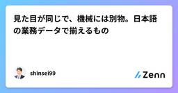
見た目が同じで、機械には別物。日本語の業務データで揃えるもの
Zennの「Claude Code」のフィード
日本語の業務データを扱っていると、見た目が同じなのに一致しないという形の不具合が定期的に出ます。うちで実際に踏んだ3つを挙げます。 ① ハイフンに見える記号は、7種類ある住所を町名と番地に分割する処理で、特定の物件だけ失敗していました。（住所）… 1136−291 ← これが分割できない（住所）… 1136-291 ← これは分割できる区切りに使われていたのは U+2212（MINUS SIGN） でした。こちらの正規表現には -－ー‐ を入れていましたが、− が抜けていました。日本語の入力欄で「ハイフンのつもり」で使われる文字は、少なくとも7種類ありま...
4時間前
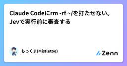
Claude Codeにrm -rf ~/を打たせない。Jevで実行前に審査する
Zennの「Claude Code」のフィード
!この記事は、実験の設計から実行・集計・執筆までClaude Code(生成AI)にやらせたものです。載せているコードとデモは、実際に動かしたものです。依頼とコマンドを渡すと、5つの判断(不可逆・秘密情報・範囲外・被害・対象)が1リクエストで返ってくる。allow / ask / blockを決めるのはコード tl;drClaude CodeのPreToolUse hookからTypeSafe AIのJev(文章を生成せず、判断だけを確率つきで返すモデル)を呼んで、Bashコマンドを実行前にallow / ask / blockへ振り分けるhookを書きました「このコ...
7時間前

JevでClaude Codeの決裁規定を監査してみた記録
Zennの「Claude Code」のフィード
2026/09/16に、TypeSafe AIが開発している「Jev」（System One）というプロダクトを知り、Early Accessで実際にAPIを試す機会を得ました。ChatGPT や Claude のような大規模言語モデル（LLM）に日常的に触れていると、「AIを使う」といえば「プロンプトを投げて、自然言語の文章を返してもらう」という体験が当たり前になっています。しかし、Jev のインターフェースと挙動は、そうした通常の生成LLMとは根本的に異なっていました。概念的な違いを整理すると、次のようになります。従来の生成LLM: Input (Prompt / C...
7時間前

緑の範囲が原稿より狭かった：Claude Code で書き、Codex でレビューする
Zennの「Claude Code」のフィード
この記事について対象読者：AI にコードや文章を書かせていて、レビューをどこでどう挟むか決めかねている人得られること：レビューの層を「強度」ではなく「何が見えるか」で分ける観点と、自分の検証の範囲が主張の範囲に届いているかを確かめる手つき前提：特定のツールに依存しない話です。手元の道具は設計判断の例として出します。バージョンや仕様はいずれも執筆時点（2026年9月）のものです実行環境：コマンドは Windows の Git Bash で実行しています。Java は JDK 21.0.8、ビルドは Gradle 9.3.1、GitHub の操作は gh です。数え直し...
8時間前

ClaudeCodeで品質を担保する仕組みを設計する — Hooks・CI・テストの役割分担
Zennの「Claude Code」のフィード
Hooksを使う理由CLAUDE.mdやSkillに書いた指示はお願いであって、強制ではない確実に実行されるのはHooksだけであるそのため、品質を担保するチェックは、確実に実行されるHooksに置くことを原則とした下記、各タイミングと実行、内容であるタイミング実行内容ファイル修正時Hookslint、typecheck、関連する単体テストコミット時Hooks単体テスト全体、結合テストマージ時CI全テスト＋E2E 1.ファイル修正時のチェック（変更したファイルに関連する単体テストのみを実施）開発用ブランチでファイル修正...
8時間前
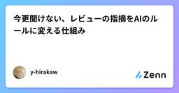
今更聞けない、レビューの指摘をAIのルールに変える仕組み
Zennの「Claude Code」のフィード
チームでAIに成果物を作らせて、人がレビューして、直させる、を毎日やっています。その「直させる」が、どこにも残っていないことに気づきました。うちの流れはこうです。空コミットでPRを作るローカルでAIに成果物を作らせて、人が確認し、問題があればその場で直させる揃ったらpushしてPRを更新するモブレビューかPRレビューで指摘をもらい、直して完成させる2の修正指示は、ローカルのチャットで消えます。4のPRコメントは残っています。過去にPRコメントを元にチェックルールを作ってみたこともありますが、効果があるか分からず、やめてしまいました。同じ指摘を別の人が別のPRでまたしていま...
8時間前
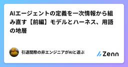
AIエージェントの定義を一次情報から組み直す【前編】モデルとハーネス、用語の地層
Zennの「Claude Code」のフィード
!注意：2万字（前後編で5万字弱）を超えるなんの面白みもない長文です。なにかの苦行を求める人、学習の教科書を探している人以外は非推奨。「AIを語る人はこれくらいは理解してますよね？」という基本的定義を出典とともに解説した文書です。社内学習用に書いたら「このレベルは無理」って却下されました。 この記事の結論エージェント ＝ モデル ＋ ハーネス。モデル（LLM）は「賢さ」、ハーネスは「それ以外の全部」（プロンプト、ツール、記憶、サンドボックス、フック、制御ループ）です日本語圏の議論が噛み合わないのは、「エージェント」という1語に、モデル・ワークフロー・ハーネス・製品の4つが...
9時間前
fast-jev-compaction (Jev) で Claude Code の compaction を間引きに替えたら 1.4 秒
Zennの「Claude Code」のフィード
Claude Code の compaction（context が溢れそうなときの会話圧縮）を、組込みの要約から fast-jev-compaction に替えました。Desktop app の session で 187,635 token を 33,447 token（82% 削減）に圧縮するのに 1.4 秒でした。組込みの要約は同じ規模で数十秒かかります。要約文を書かないので、会話本文に書いた file:line や実測値はそのまま残ります。 試した条件2026-09-19 の 1 日、session 3 本（terminal 2 回、Desktop app 1 回の c...
10時間前

AIエージェント運用の『学び台帳』を設計した——再発だけを恒久ルールへ昇格させる仕組み
Zennの「Claude Code」のフィード
Claude Code のような AI エージェントに継続的な開発・運用を任せていると、チェックリストや規約ドキュメントに書かれていない種類の欠陥に何度も出会う。指摘してやり直させれば1回はその場で直る。問題は、次の似た作業のときに同じ指摘をもう一度することになる点だ。エージェントのコンテキストはセッションごとにリセットされるので、口頭でのフィードバックは何もしなければ揮発する。この記事では、この「同じ指摘の繰り返し」を減らすために組んだ、チーム単位の学び台帳（lessons ledger）と、そこから恒久ルールへ昇格させる仕組みについて書く。 課題：フィードバックの粒度がバラバラ...
10時間前
Claude Codeに7部署を持たせて壊れた12の場面と、動いた直し方
Zennの「Claude Code」のフィード
Claude Codeのサブエージェントで市場調査・開発・企画・PR・動画・未来構想・監査など8部署を作り、秘書役のClaudeに毎日の実務を回させた記録。2026年7月から9月までに実際に壊れた12の場面を、何をしようとして・何が起きて・原因は何で・どう直したら動いたかの順に書いた失敗台帳。組織設計の理屈ではなく、明日から使えるチェックリストとして。
10時間前

コードを書かずに AI に本番の自動化を作らせる ― 決めるのは 3 つだけ
Zennの「Claude Code」のフィード
実装を一行も書かずに、AI に「無人で動くもの」を作らせて運用した記録です。人間が決めたのは要件・上限・止める条件の 3 つだけで、残りは AI が決めました。設定 1 行で 1 日分の判断が消えた事故、板に載っていなかった注文、200 日開いたままの25% の乖離、そして公開の前に読む規則までを、自分の口座とシステムの記録の数字だけで書いています。暗号資産の売買は 2026-08-20 から 09-06 まで自分の口座で、以後は同じ仕組みを紙上で動かしています。投資の助言ではありません。
10時間前

AIに営業プロセスを一周させた（7）API成功は視覚QAではない
Zennの「Claude Code」のフィード
最終回です。生成が成功したあとに何をしたか、という話をします。slide-forge の共通契約に、たった 1 行こう書かれています。API success is not visual QA.（API の成功は、視覚 QA ではない）この 1 行のために、今回 5 件の欠陥が見つかりました。 1. 検査は 2 段構えGate 1（オフライン）Gate 2（視覚 QA）いつ生成前生成後何を見る座標・文字量・重なりの計算サムネイル画像コストAPI を呼ばない（無料）画像を読むコマンド--dry-run --strict...
10時間前
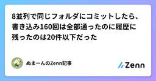
8並列で同じフォルダにコミットしたら、書き込み160回は全部通ったのに履歴に残ったのは20件以下だった
Zennの「Claude Code」のフィード
AI に作業を任せるとき、1体だけでなく何体か同時に走らせたくなります。そこで必ずぶつかるのが「全員を同じフォルダで働かせていいのか」という問題です。解決策として名前が挙がるのがgit の worktree(ワークツリー)という仕組み。同じ履歴を共有したまま、作業フォルダだけを複数に分ける機能です。今回それを実際に動かして測ったところ、一番驚いたのはここでした。同じフォルダのまま8つの処理を同時に走らせると、ファイルへの書き込み160回は1回残らず成功するのに、記録として残った作業は20件以下しかない。しかも失敗はほとんど画面に流れず、後から見ると「作業した形跡はあるのに履歴が...
10時間前
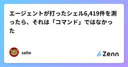
エージェントが打ったシェル6,419件を測ったら、それは「コマンド」ではなかった
Zennの「Claude Code」のフィード
3行で自分のセッションログから Claude Code が実行した Bash コマンド 6,419 件を取り出して形を測った。**中央値 242 文字。80 文字以内に収まるのは 11.0%。26% はシェルではなく別言語のプログラムを流し込んでいる。**残りの純シェルも 91.3% が複合で、断片数の中央値は 5、最大 60。コマンド名で承認や監査をする仕組みは、この形の入力を前提にしていない。前方一致の許可リストは 13.2% を素通しさせる。 動機前の記事で、ツール失敗 283 件のうち最多の原因がハーネスの承認ゲートだったことを書いた。承認は「コマンド」を単位...
12時間前
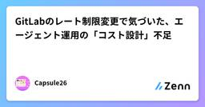
GitLabのレート制限変更で気づいた、エージェント運用の「コスト設計」不足
Zennの「Claude Code」のフィード
きっかけGitLab が2026年10月〜2027年1月にかけてAPIのレート制限を変更する予定というニュースを見た。自動化ツールやCI/CDパイプラインがAPIを叩く頻度・パターンに直接影響する変更で、「知らずに動かしていたスクリプトが、ある日から急に制限に引っかかる」という事態が起きうる。これはGitLabに限った話ではない。LLMエージェントを使った自動化でも、全く同じ構造の問題が起きる。外部APIのレート制限・料金体系は、こちら側の都合とは無関係に変わる「動いているから大丈夫」で運用していると、変更に気づくのは制限に引っかかった後エージェントが自律的にAPIを...
12時間前
AI開発エージェント使い分けガイド 2026 — Claude Code・Devin・Codex・OpenClaw・Pencil の選び方
Zennの「Claude Code」のフィード
「結局、どのAIエージェントを使えばいいの?」に答える一冊です。Claude Code、Devin、OpenAI Codex、OpenClaw、Pencil。それぞれ強みも思想もコストも違います。本書は5つの主要エージェントを同じ土俵で比較し、実行環境・自律度・並列性・コスト・ガバナンスという5つの軸で「あなたの現場ならどれか」を選べるようにします。こんな人にオススメ✅ AIコーディングツールが多すぎて選べない方✅ 1つに絞らず、複数を賢く併用したい方✅ Devinの「良い指示・悪い指示」を具体例で知りたい方✅ 並列・マルチエージェント（Manage Devins / SWARM）の違いを整理したい方✅ チーム導入前にコストとリスクを見積もりたい方各章は独立した問いに答える形で、比較表とmermaid図解を多用しています。ツール単体の紹介ではなく、現場での選定と組み合わせに踏み込みました。
13時間前
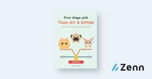
はじめてのチーム Git/GitHub 運用手順書
Zennの「Claude Code」のフィード
個人で commit / push / branch / PR は触ったことがあるけれど、チームで同じリポジトリを回すのは初めて。そんな人向けに、運用設計 → 全員共通の初期設定 → リポジトリの共有 → 日常の一周 → コンフリクトと事故対応 → Claude Code の共有設定 → テンプレート集の順で、「手順書どおりに回せる」状態を作ります。GitHub Enterprise・全員 Windows・Claude Code は社内 API 経由という環境に決め打ちした、連載「チームで回す Git/GitHub 運用」（全7回）の書籍版です。
14時間前
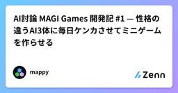
AI討論 MAGI Games 開発記 #1 — 性格の違うAI3体に毎日ケンカさせてミニゲームを作らせる
Zennの「Claude Code」のフィード
!この記事は「AI討論 MAGI Games 開発記」の第1回です。日々の変更や気づきはスクラップに書き足していて、ネタが溜まったら次の回にまとめます。 作ったもの毎日1本、ブラウザで遊べるミニゲームが増えていくサイトを作りました。https://magi-games.mappy555.workers.devただし、何を作るかは私が決めていません。性格の違う3体のAIエージェントが案を出し合い、言い合いをして、投票で決めます。採用されたテーマを「司令」役の Claude Code が実装し、議事録と一緒に自動で公開します。私がやるのは、朝起きて「今日は何ができたか」を見に行...
14時間前
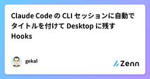
Claude Code の CLI セッションに自動でタイトルを付けて Desktop に残す Hooks
Zennの「Claude Code」のフィード
はじめにClaude Code はターミナルの CLI でも、Claude Desktop の Code タブでも使えます。普段は iTerm2 で CLI を使い、あとから見返したいセッションは Desktop のサイドバーに残しておく、という使い方をしています。ところが次のような不満がありました。CLI のセッション名は work-bb のような自動生成の名前で、何をしたセッションか分からない/desktop で Desktop に引き継いでも、タイトルが付くのは Desktop で最初のメッセージを送ったあとCLI を普通に /exit すると、Desktop に...
15時間前
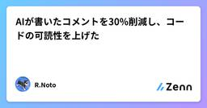
AIが書いたコメントを30%削減し、コードの可読性を上げた
Zennの「Claude Code」のフィード
はじめにAIでコーディングをしていると、ソースコードがコメントだらけになりがちですまた、コメントも読みやすさに寄与するものであればよいのですが、それらしい造語が多用されていたり、コードを読めばわかるようなものが多かったりと、可読性を落としていることがほとんどです 対象読者AIを用いたコーディングを行っている方生成されたコードのコメントが多く、可読性について悩んでいる方 記事を読むメリットAIの生成するコードについて、コメントを削減した実際の体験について知れるコピペで利用できるコメントスタイルが得られる 結論以下のコメントスタイルを追加し、実装時・レビ...
15時間前